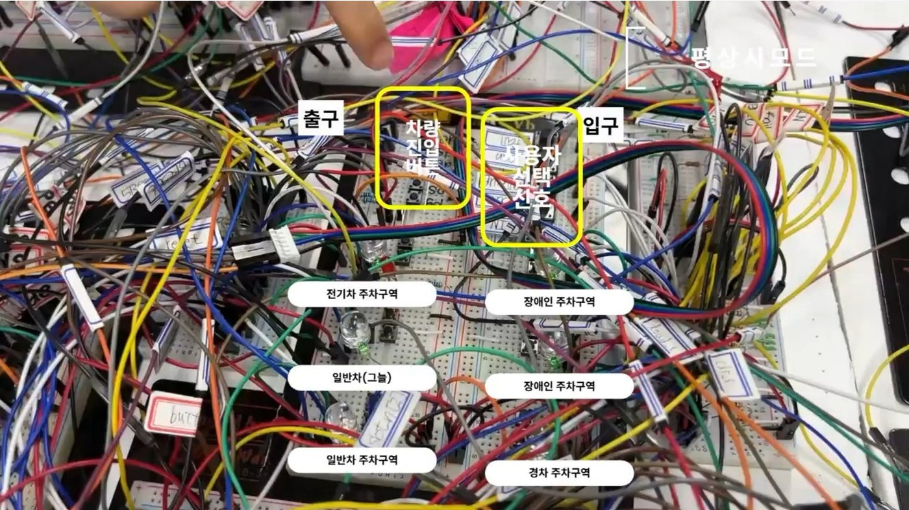
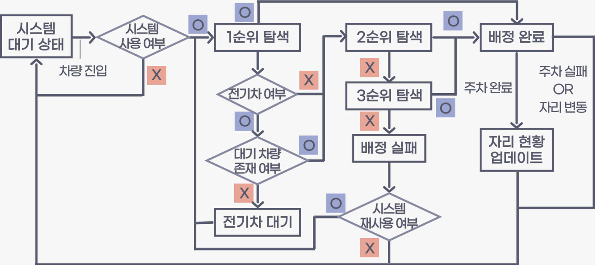
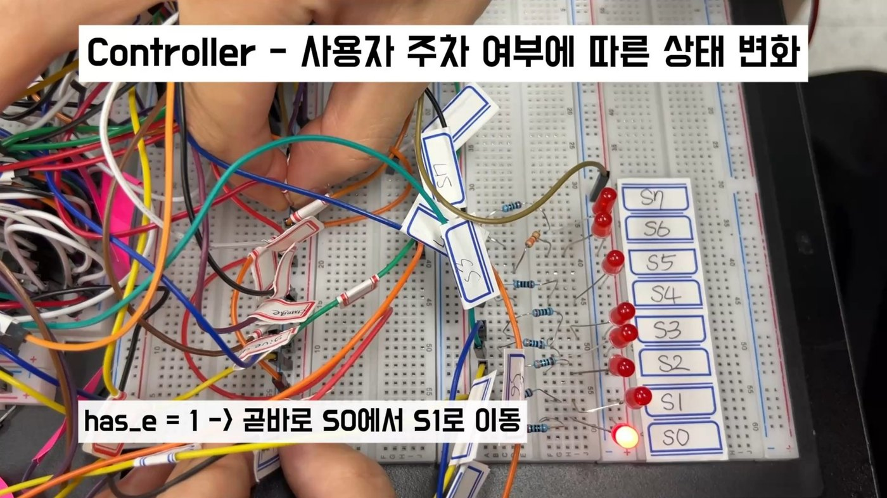

차종·장애 여부와 실시간 주차 현황으로 최우선 자리를 배정하고, 이동 중 자리 변동이나 주차 실패 시 현재 위치를 기준으로 재배정하는 시스템을 조합논리 IC로 구현했습니다.

| 학기 | 프로젝트 | 과목 | 역할 |
|---|---|---|---|
| 2024-1 | 블루투스를 이용한 임산부 배려석 | 기초회로실험및설계1 | 팀장 |
| 2024-2 | Smart Elevator | 기초회로실험및설계2 | 팀장 |
| 2025-1 | 자동 주차 배정 시스템 | 전자재료물성실험및설계1 | 팀장 |
| 2025-2 | 최단 시간 경로 내비게이션 | 전자재료물성실험및설계2 | 팀원 |
6칸 주차장(장애인 2, 일반 2, 전기차 1, 경차 1)에서 차종과 장애 여부의 6가지 경우에 우선순위를 정하고, 이동 중 빈자리 발생, 배정 자리 점유, 여름철 그늘 자리 같은 돌발 상황까지 처리하는 배정 시스템을 설계했습니다.

